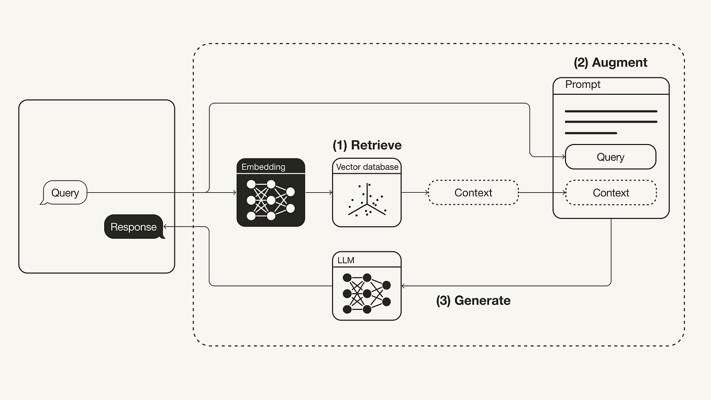
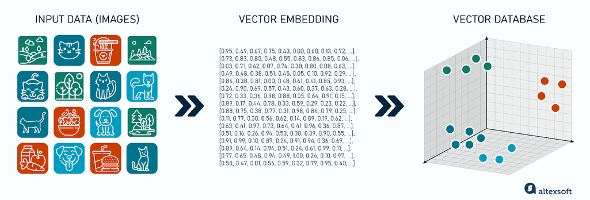
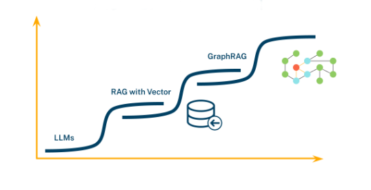
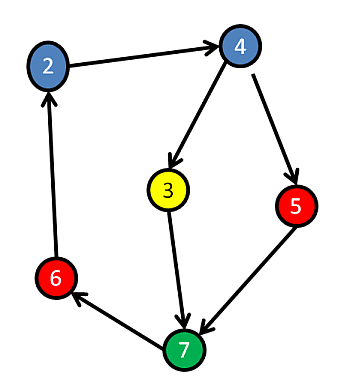
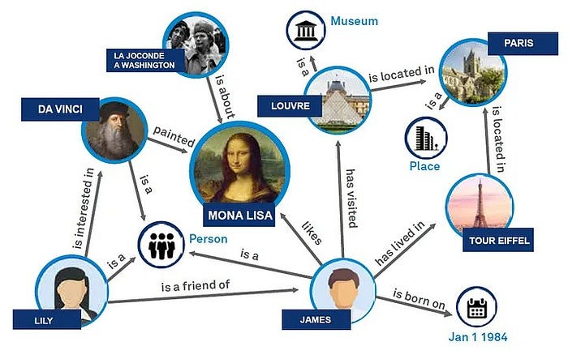
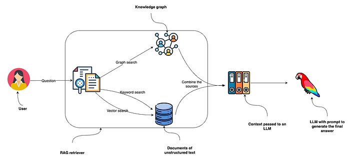
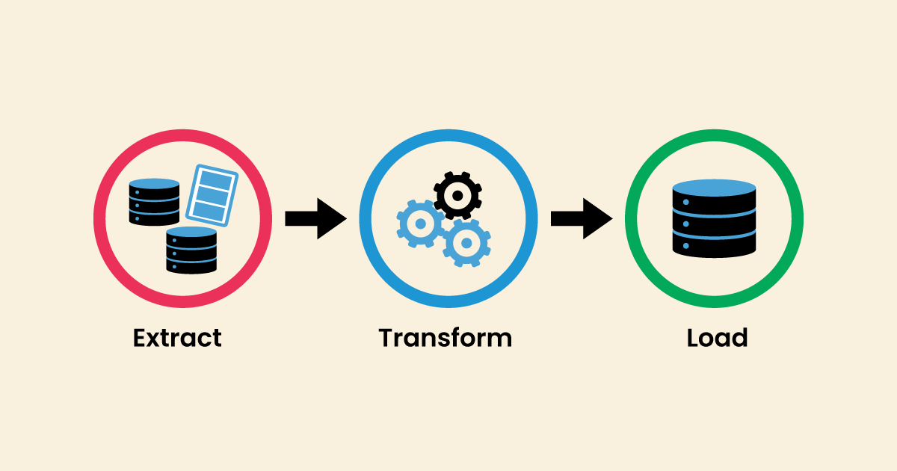

8. Graph RAG
AI Agenter og automatisering
Agenda
- Graph RAG
- Markdown
- Obsidian
Naïve RAG — Recap
Naïve or Vector RAGs

Naïve or Vector RAGs
- Documents are split into chunks
- Each chunk is embedded into a vector
- Queries are embedded and matched by similarity
- Relevant chunks are injected into the LLM prompt
Embeddings into Vectors

Issues with Naïve RAGs
Issues with Naive RAGs
- Loss of Context: Splitting documents into independent chunks severs the relationships between them
- Difficulty with Comparative Questions: Answering “What are the differences between Product A and Product B?” is hard
- Redundancy and Noise: Multiple chunks saying roughly the same thing add noise for the LLM
- “Shallow” Retrieval: Vector search finds explicit information but struggles with implicit relationships. It will not know that “MIT” is a “university” in “Cambridge” unless that is stated in the chunk

Markdown
Hvad er Markdown?
- Et simpelt formateringssprog baseret på tegnsætning
- Bruges overalt: ChatGPT, n8n, Quarto, GitHub, Obsidian
- Ingen kode — bare tegn som
#,**,*,-,>
Basis-syntaks
| Markdown | Resultat |
|---|---|
# Overskrift |
Stor overskrift (H1) |
## Overskrift |
Sektions-overskrift (H2) |
**fed tekst** |
fed tekst |
*kursiv tekst* |
kursiv tekst |
***fed+kursiv*** |
fed+kursiv |
- punkt |
Punktopstilling |
1. første |
Nummereret liste |
Avanceret syntaks
| Formål | Markdown |
|---|---|
| Citatblok | > Dette er et citat |
| Kodelinje | `kode` |
| Kodeblok | ```kode``` |
| Skillelinje | --- |
| Link | [tekst](URL) |
| Billede |  |
| Tabel | \| Kol1 \| Kol2 \| |
| Indlejret liste | ··- Underpunkt (2 mellemrum) |
Markdown i praksis
Kode:
LLM’en ser:
- En H1-overskrift som kontekst for hele prompten
- To navngivne sektioner den kan referere til
- Fed tekst som signal om hvad der er vigtigt
Hvorfor Markdown til LLMs?
- System prompts: Struktur med
#og-giver LLM’en klare ansvarsområder - n8n workflows: Markdown i HTTP body, prompt templates, output formatting
- RAG chunks: Markdown-headers bruges som naturlige chunk-grænser (
##) - Quarto / slides: Hele dette kursus er skrevet i Markdown
Obsidian
Obsidian
- En note-app bygget 100% på Markdown-filer (
.md) - Lokale filer — ingen cloud lock-in
- Backlinks:
[[note navn]]linker noter til hinanden → bygger en personlig knowledge graph - Graph view: Visualisér forbindelserne mellem dine noter
- Perfekt som personlig vidensbase der kan fødes ind i et RAG-system
Obsidian

Zettelkasten
En note-metode fra 1900-tallet — opfundet af sociolog Niklas Luhmann
Han producerede 90.000 håndskrevne noter og over 70 bøger
Princip: Én idé per note, altid linket til relaterede noter
Noter er ikke hierarkiske mapper — de er et netværk af tanker
De tre note-typer:
- Fleeting notes — hurtige tanker, kasseres efter bearbejdning
- Literature notes — hvad du lærte fra en kilde, med egne ord
- Permanent notes — din egen indsigt, formuleret til at stå alene
How to Take Smart Notes
- De fire principper:
- Skriv altid med egne ord — kopiering giver ingen forståelse
- Link noter til hinanden — ikke til mapper og kategorier
- Byg et slip-box — en ekstern hjerne du kan tænke med, ikke bare i
- Lad strukturen opstå — projekter og essays vokser ud af netværket
- Sönke Ahrens, 2017
- Bygget omkring Luhmanns Zettelkasten-metode
- Hovedpointe: Skrivning starter ikke når du åbner et blankt dokument — det starter når du tager din første note
Obsidian → RAG
Dine Obsidian-noter er allerede RAG-klar:
- Hver
.md-fil er et dokument ##-headers er naturlige chunk-grænser[[backlinks]]er eksplicitte relationer — perfekt til Graph RAG- Vault-mappen kan peges direkte på af n8n til ingest
What is a Graph?
- A graph is a data structure that models entities and the relationships between them
- It is not a chart or coordinate system!

Nodes
- Nodes — the primary “things” or nouns in your data:
- Person: “Dr. Eva Core”
- Company: “InnoTech”
- Project: “Helios”
- Concept: “Machine Learning”
Relations
- Relations — directed, labeled connections between nodes:
WORKS_ATDEVELOPEDIS_PREREQUISITE_FOR
Graph example

Exercise
- Create a vault in Obsidian
- Create a graph in Obsidian.md
- Hint: Scrape some wikipedia pages and let the AI make the pages
- “Make markdown page with obsidian links out of this page… insert wikipedia page”
- Hint: Scrape some wikipedia pages and let the AI make the pages
- You can use a similar tool if you want
Graph RAGs
Graph RAGs
- Based on graphs instead of vectors
- Instead of a list of text chunks, we first build a Knowledge Graph
- The graph explicitly stores entities as nodes and relationships between them as edges
Building the Graph
This isn’t just about embedding text — it’s about extracting structured information from unstructured text
We identify the key entities and how they connect
Example: From the sentence “Dr. Eva Core developed the ‘Helios’ project at InnoTech”:
- Three nodes:
Eva Core,Helios,InnoTech - Two relationships:
DEVELOPED,WORKED_AT
- Three nodes:
Graph vs. Vector RAG
Hybrid Search

Combining Vector + Graph RAG
- Vector search: fast semantic similarity — great for finding relevant content
- Graph traversal: structured relationship queries — great for finding connected context
- Hybrid: use vector search to find the entry point, then traverse the graph to enrich the answer
ETL for Graph RAGs

Extract
- Entity Extraction: Use LLMs to identify key entities in your documents
- People, organisations, locations, topics, etc.
- Relationship Extraction: Identify verbs or phrases that connect entities
- “Company X acquired Company Y”
- “Person A is the CEO of Company B”
Transform
- Schema Definition: Define what types of nodes and relationships your graph will have
- Node types:
Person,Company,Project - Relationship types:
WORKS_FOR,ACQUIRED,TOPIC_OF
- Node types:
- Data Cleaning & Normalisation: Standardise entity names
- “MIT” and “Massachusetts Institute of Technology” → same node
Load
- Populate the Graph Database: Use a graph database like Neo4j to load the extracted nodes and relationships
- Creates the persistent, queryable knowledge graph the RAG system will use
Using the Graph DB
- Query Transformation: Natural language question → formal graph query (Cypher), done with an LLM
- Graph Traversal & Retrieval: The DB returns a structured subgraph — not just a chunk of text, but related nodes and edges
- Context Augmentation: The structured data is serialised into readable text and passed to the LLM as context
Example: Course Prerequisites
Naïve RAG query: “Which courses should I take after Databases?”
- A vector RAG might return the description of an advanced database course — and that’s it
Graph RAG query: Same question → transformed to Cypher:
- Returns all courses with Databases as a prerequisite
- Can also pull in descriptions — a complete, accurate answer
Use Case: Code Base Navigation
Nodes: Functions, Classes, Files, Modules, Developers
Relationships: CALLS, DEFINED_IN, IMPORTS, AUTHORED_BY
Questions a Graph RAG can answer:
- “What does the
calculate_metricsfunction do?” → retrieves docstring + code - “Who has modified
user_authentication.pythe most?” → traverseAUTHORED_BYand aggregate - “Show all functions that call
database.connect()” → trivial graph query, very hard for vector search
Live Demo — NEO4J
Demo: Film Database
- Explore a film dataset in Neo4j
- ETL walkthrough: extract entities and relationships from text
ETL Example
Source material: RAG and Graph RAG Wikipedia pages
- Ask AI to generate Cypher to create nodes and relationships (show prompt + result)
- Load into Neo4j database
- Query the database — explore what the graph knows
- Create a n8n workflow that utilizes the graph db (cypher call)